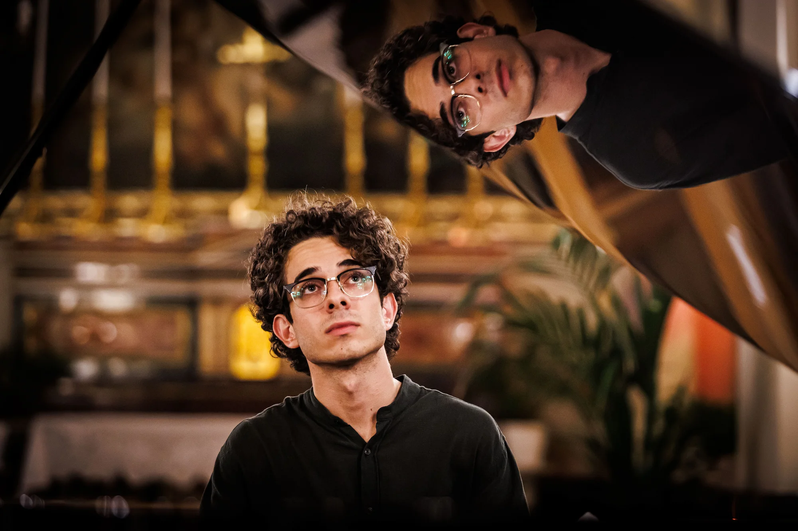
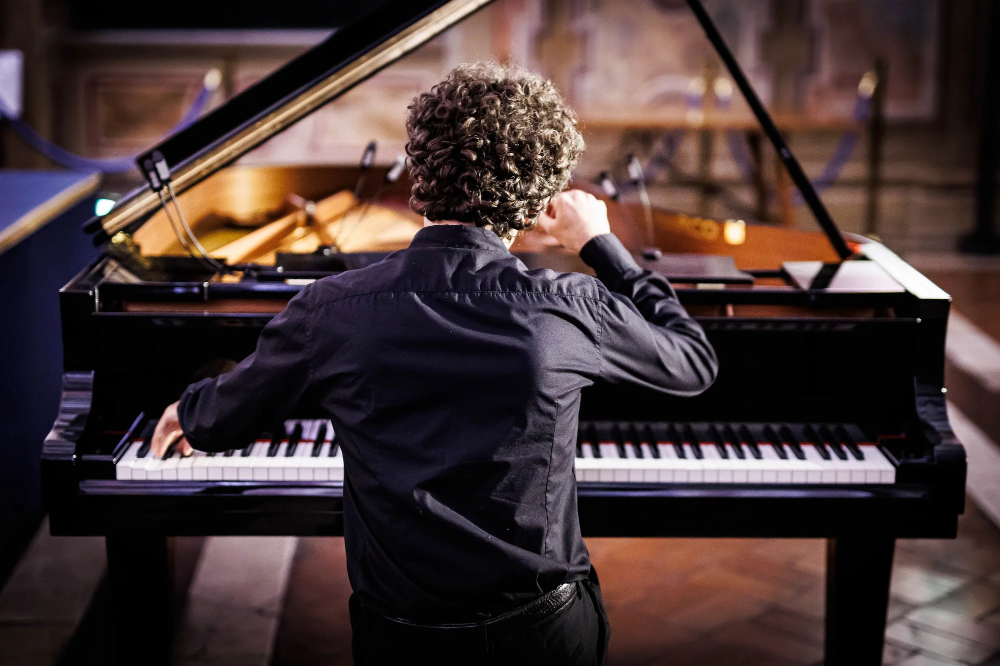
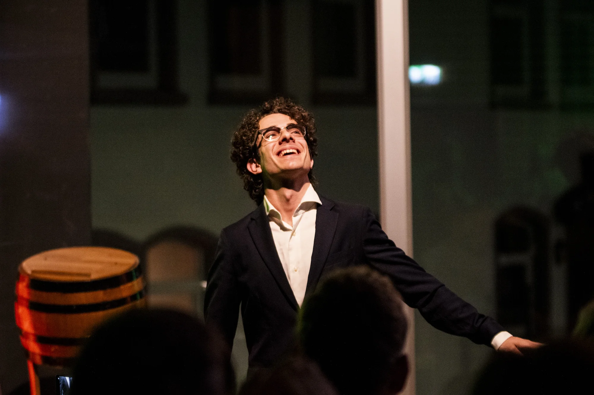
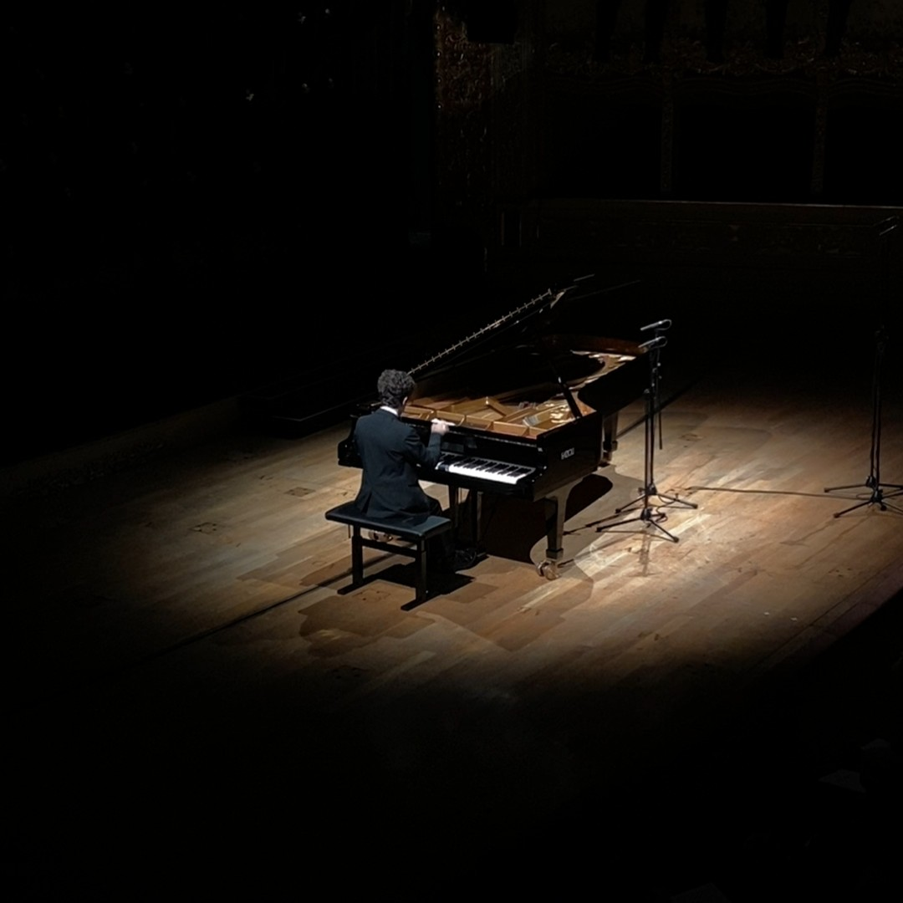
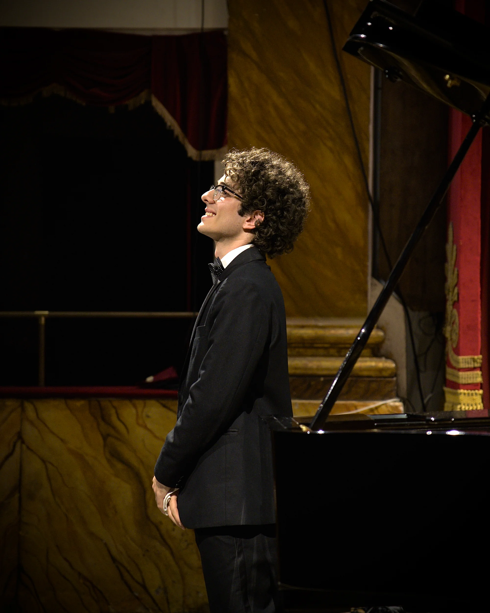
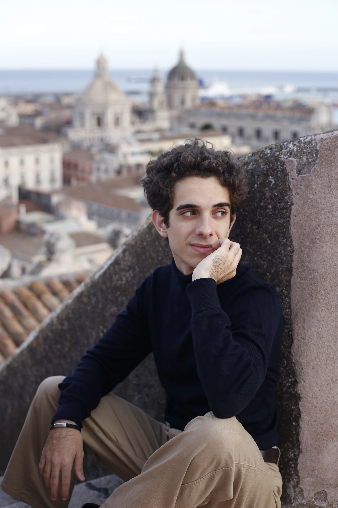
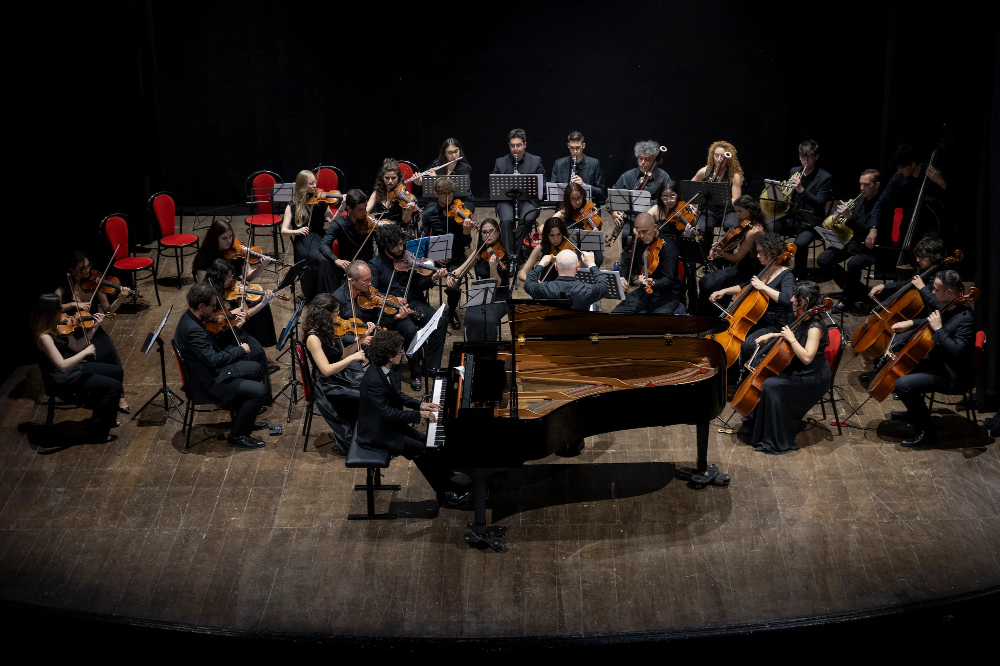
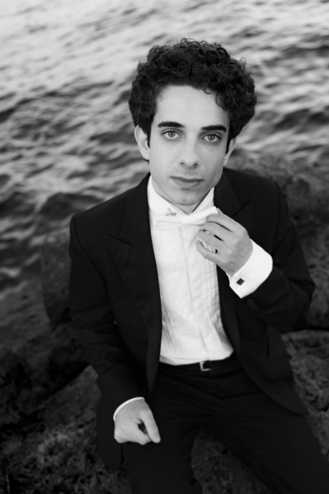

Photo by Flavia Nicolosi

VPMusica - Photo by Flavio Ianniello

Festival della Tuscia - Photo by Flavio Ianniello

Klavierstadt Einbeck - Photo by David Silesu
Ragusa, 2022 - Teatro Donnafugata
Photo by Flavia Nicolosi

Venice, 2023 - Teatro La Fenice

Noto, 2025 - Teatro Tina Di Lorenzo Photo by Flavia Nicolosi

Catania, 2023 - Photo by Flavia Nicolosi

Noto, 2025 - Teatro Tina Di Lorenzo Photo by Flavia Nicolosi

Photo by Flavia Nicolosi